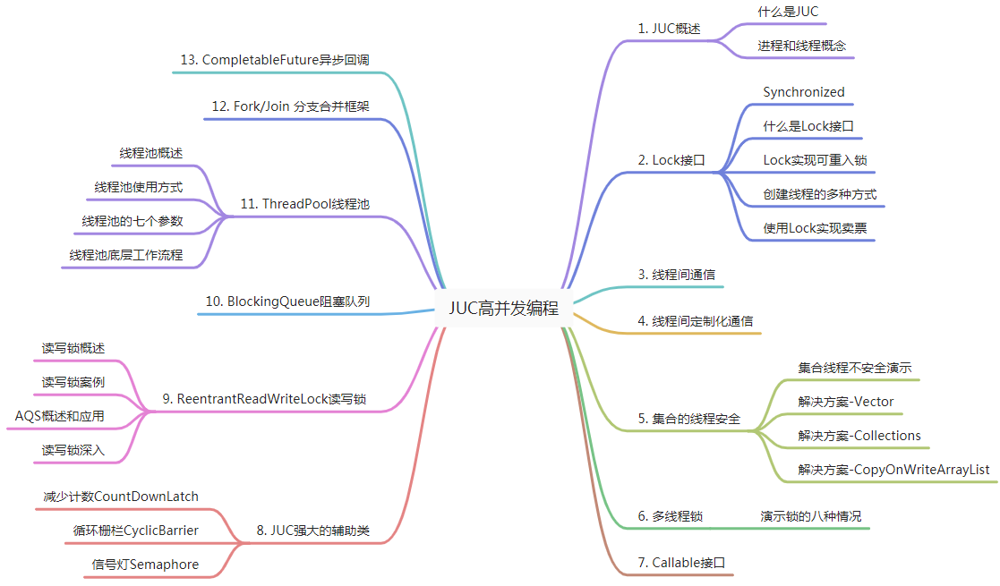
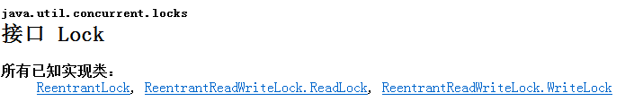
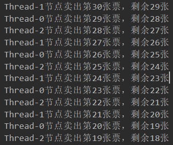
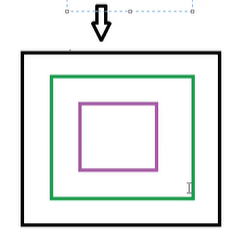
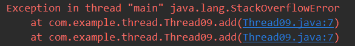
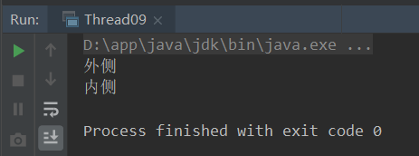
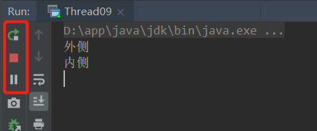
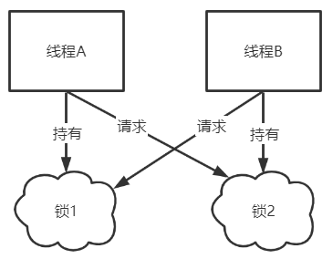
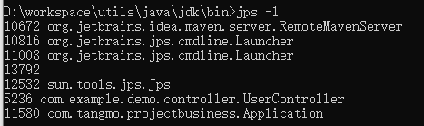
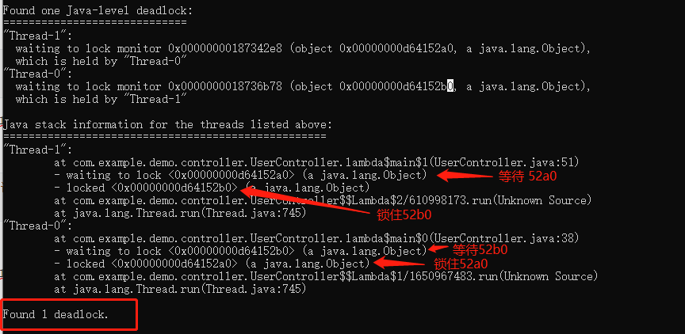

内容介绍 
JUC概述 1. 什么是JUC 在Java中，线程部分是一个重点，本篇文章说的JUC也是关于线程的。JUC就是java.util.concurrent工具包的简称。这是一个处理线程的工具包，JDK1.5开始出现的。
java在线文档https://www.matools.com/api/java8
2. 进程与线程 进程 ( Process )是计算机中的程序关于某数据集合上的一次运行活动，是系统进行资源分配和调度的基本单位，是操作系统结构的基础。在当代面向线程设计的计算机结构中，进程是线程的容器。程序是指令、数据及其组织形式的描述，进程是程序的实体。是计算机中的程序关于某数据集合上的一次运行活动，是系统进行资源分配和调度的基本单位，是操作系统结构的基础。程序是指令、数据及其组织形式的描述，进程是程序的实体。
线程 ( thread )是操作系统能够进行运算调度的最小单位。它被包含在进程之中，是进程中的实际运作单位。一条线程指的是进程中一个单一顺序的控制流，一个进程中可以并发多个线程，每条线程并行执行不同的任务。
以360杀毒为例：
打开360杀毒，即在电脑中开启了一个进程（360杀毒就是一个进程）；
在360杀毒有非常多的功能，如：木马查杀、电脑清理等，这些功能就可以看成是不同的线程；
总结来说：
进程：指在系统中正在运行的一个应用程序；程序一旦运行就是进程；进程——资源分配的最小单位。
线程：系统分配处理器时间资源的基本单元，或者说进程之内独立执行的一个单元执行流。线程——程序执行的最小单位。
3. 线程的状态 * Thread.State 枚举类
1 2 3 4 5 6 7 8 9 10 11 12 13 14 15 16 17 18 19 public enum State NEW， RUNNABLE， BLOCKED， WAITING， TIMED_WAITING， TERMINATED; }
4. wait和sleep
sleep是Thread的静态方法；wait是Object的方法，任何对象实例都能调用；
sleep不会释放锁，也不需要占用锁；wait会释放锁，但调用它的前提是当前线程占有锁（即代码要在Synchronized中）；
他们都可以被interrupted方法中断；
5. 并发和并行 5.1 串行模式 多个任务一个一个执行
5.2 并行模式 多个任务同时执行
5.3 并发与并行 并发 ：同一时刻多个线程在访问同一个资源
例如：春运抢票、电商秒杀…，一个人做两条流水线的工作
并行 ：多项工作一起执行，之后再汇总
例如：泡泡面，电水壶烧水的同时撕调料倒入桶中，两个人做两条流水线的工作
6. 管程
Monitor JAVA中称为锁，程序中称为监视器
JVM中的同步基于进入和退出进行操作的，使用管程对象实现的
JVM要进行同步操作，要基于Monitor对象，来实现的，即进入某线程时要加锁，退出某线程要解锁
7. 用户线程和守护线程 用户线程： 平时锁用到的线程基本都是用户线程；
守护线程： 用在后台中的特殊线程，比如垃圾回收；设置线程为守护线程thread.setDaemon(true);
主线程结束了，用户线程还在运行，JVM存活
主线程结束时，若不存在用户线程都是守护线程，则JVM结束
即守护线程是不会影响JVM结束的线程，JVM不会因为守护线程的存活而放弃关闭
1 2 3 4 5 6 7 8 9 10 11 12 13 14 15 16 17 18 19 20 21 22 23 24 public static void main (String[] args) Thread aa = new Thread(() -> { while (true ) { try { System.out.println(Thread.currentThread().getName() + "::" + Thread.currentThread().isDaemon()); Thread.sleep(1000 ); } catch (Exception e) { e.printStackTrace(); } } }， "aa" ); aa.setDaemon(true ); aa.start(); try { Thread.sleep(5000 ); } catch (Exception e) { e.printStackTrace(); } System.out.println(Thread.currentThread().getName() + "::over" ); }
多线程编程步骤 1. 上部（多个线程） a 创建资源类，在资源类中创建属性和操作方法 b 创建多个线程，调用资源类的操作方法 2. 中部（在资源类操作方法中） a 创建资源类，在资源类中创建属性和操作方法 b 在资源类操作方法中
判断
干活
通知
c 创建多个线程，调用资源类的操作方法 3. 下部（防止虚假唤醒问题） a 创建资源类，在资源类中创建属性和操作方法 b 在资源类操作方法中
判断
干活
通知
c 创建多个线程，调用资源类的操作方法 d 防止虚假唤醒问题 Lock接口 1. Synchronized关键字
自动上锁和解锁
1.1 Synchronized作用范围 Synchronized是java中的关键字，是一种同步锁。它修饰的对象有以下几种：
修饰一个代码块，被修饰的代码块称为同步语句块（放置于方法中，该方法不能用static修饰），其作用的范围是大括号括起来的代码，作用的对象是调用这个代码块的对象。
1 2 3 4 5 6 7 public void fun1 () System.out.println(Thread.currentThread().getName() + ":: am in" ); synchronized (this ) { System.out.println(Thread.currentThread().getName()); } }
修饰一个方法，被修饰的方法被称为同步方法，其作用的范围是整个方法，作用的对象是调用这个方法的对象。
1 2 3 4 synchronized public void fun2 () System.out.println(Thread.currentThread().getName() + ":: am in" ); }
虽然可以使用synchronized来定义方法，但synchronized并不属于方法定义的一部分，因此， synchronized关键字不能被继承。如果在父类中的某个方法使用了synchronized关键字，而在子类中覆盖了这个方法，在子类中的这个方法默认情况下并不是同步的，而必须显式地在子类的这个方法中加上synchronized关键字才可以。当然，还可以在子类方法中调用父类中相应的方法，这样虽然子类中的方法不是同步的，但子类调用了父类的同步方法，因此子类的方法也就相当于同步了。
修饰一个静态方法，其作用的范围是整个静态方法，作用的对象是这个类的所有对象。
1 2 3 4 synchronized public static void fun2 () System.out.println(Thread.currentThread().getName() + ":: am in" ); }
修饰一个类，其作用的范围是synchronized后面括号括起来的部分，作用的对象是这个类的所有对象。
1 2 3 4 5 6 7 8 class SynThread02 public void fun1 () synchronized (SynThread02.class) { } } }
1.2 注 注：当synchronized修饰某一资源时，其余多条线程操作统一资源时才会上锁
1 2 3 4 5 6 7 8 9 10 11 public void fun1 (String str) synchronized (str) { System.out.println(Thread.currentThread().getName() + " :: am in" ); try { Thread.sleep(100 ); } catch (InterruptedException e) { e.printStackTrace(); } } System.out.println(Thread.currentThread().getName() + " :: am out" ); }
调用方式1：可以看出每条线程访问的都是同一个str对象因此，加锁有效
1 2 3 4 5 6 7 8 9 10 11 12 13 14 15 16 public static void main (String[] args) SynThread03 synThread03 = new SynThread03(); String str = new String("lock" ); for (int i = 0 ; i < 5 ; i++) { new Thread(() -> { synThread03.fun1(str); }).start(); } } Thread-0 :: am in Thread-2 :: am in Thread-0 :: am out Thread-2 :: am out Thread-1 :: am in Thread-1 :: am out
调用方式2：每条线程访问的都是不同的str对象
1 2 3 4 5 6 7 8 9 10 11 12 13 14 15 16 public static void main (String[] args) SynThread03 synThread03 = new SynThread03(); for (int i = 0 ; i < 3 ; i++) { new Thread(() -> { String str = new String("lock" ); synThread03.fun1(str); }).start(); } } Thread-0 :: am in Thread-2 :: am in Thread-1 :: am in Thread-2 :: am out Thread-0 :: am out Thread-1 :: am out
1.4 Synchronized实现卖票 1 2 3 4 5 6 7 8 9 10 11 12 13 14 15 16 17 18 19 20 21 22 23 24 25 26 27 28 29 30 31 32 33 34 35 36 37 38 @SuppressWarnings("all") class SynThread04 public static void main (String[] args) Ticket ticket = new Ticket(); for (int i = 0 ; i < 3 ; i++) { new Thread(new Runnable() { @Override public void run () while (true ) { boolean sell = ticket.sell(); if (!sell) { break ; } } } }).start(); } } } class Ticket private int count = 30 ; public synchronized boolean sell () if (count > 0 ) { System.out.println(Thread.currentThread().getName() + " 节点，卖出第" + (count--) + "张票，剩余：" + count); } System.out.println("----" ); return count > 0 ; } }
2. Lock接口 2.1 概念
手动实现上锁和解锁

2.2 Lock锁与synchronized的比较 Lock锁实现提供了比使用同步方法和语句可以获得的更广泛的锁操作。它们允许更灵活的结构，可能具有非常不同的属性，并且可能支持多个关联的条件对象。Lock 提供了比synchronized更多的功能。
Lock是一个接口，而synchronized是Java中的关键字， synchronized是内置的语言实现;。
synchronized在发生异常时，会自动释放线程占有的锁，因此不会导致死锁现象发生;而Lock在发生异常时，如果没有主动通过unLock()去释放锁，则很可能造成死锁现象，因此使用Lock时需要在finally块中释放锁;
Lock可以让等待锁的线程响应中断，而synchronized却不行，使用synchronized时，等待的线程会一直等待 下去，不能够响应中断;
通过Lock可以知道有没有成功获取锁，而synchronized却无法办到。
Lock可以提高多个线程进行读操作的效率。
在性能上来说，如果竞争资源不激烈，两者的性能是差不多的，而当竞争非常激烈时（有大量线程同时竞争），此时Lock的性能要远远优于synchronized
2.3 可重入锁 ReentrantLock - 实现卖票 例如：上厕所排队，一个人进入上锁，出来后解锁
1 2 3 4 5 6 7 8 9 10 11 12 13 14 15 16 17 18 19 20 21 22 23 24 25 26 27 28 29 30 31 32 33 34 35 36 37 38 39 40 41 public static void main (String[] args) LockTicket ticket = new LockTicket(); new Thread(() -> { for (int index = 0 ; index < 40 ; index++) { ticket.sell(); } }， String.valueOf(1 )).start(); new Thread(() -> { for (int index = 0 ; index < 40 ; index++) { ticket.sell(); } }， String.valueOf(2 )).start(); new Thread(() -> { for (int index = 0 ; index < 40 ; index++) { ticket.sell(); } }， String.valueOf(3 )).start(); } class LockTicket private int count = 30 ; private final ReentrantLock lock = new ReentrantLock(); public void sell () lock.lock(); try { if (count > 0 ) { System.out.println(Thread.currentThread().getName() + " 节点，卖出第" + (count--) + "张票，剩余：" + count); } } finally { lock.unlock(); } } }
注： 当使用Lock上锁时，若解锁前的逻辑中出现问题，则会无法正常释放锁
此时可以使用 try {} finally {} 进行解锁操作
1 2 3 4 5 6 7 8 9 lock.lock(); try { ... } finally { lock.unlock(); }
线程间的通信，主要：wait和notify
synchronized关键字：
Lock接口：
例子：两个线程，实现对一个初始值为0的变量，一个线程对值 +1，另外一个线程对值 -1
使用synchronized关键字 1 2 3 4 5 6 7 8 9 10 11 12 13 14 15 16 17 18 19 20 21 22 23 24 25 26 27 28 29 30 31 32 33 34 35 36 37 38 39 40 41 42 43 44 45 46 47 48 49 50 51 52 53 54 55 56 57 58 59 60 61 62 63 64 class Share private int number = 0 ; public synchronized void incr () throws InterruptedException if (number != 0 ) { this .wait(); } number++; System.out.println(Thread.currentThread().getName() + "::" + number); this .notifyAll(); } public synchronized void decr () throws InterruptedException if (number != 1 ) { this .wait(); } number--; System.out.println(Thread.currentThread().getName() + "::" + number); this .notifyAll(); } } public class Thread04Communication public static void main (String[] args) Share share = new Share(); new Thread(() -> { for (int i = 0 ; i < 10 ; i++) { try { share.incr(); } catch (InterruptedException e) { e.printStackTrace(); } } }).start(); new Thread(() -> { for (int i = 0 ; i < 10 ; i++) { try { share.decr(); } catch (InterruptedException e) { e.printStackTrace(); } } }).start(); } }
通过Lock接口 1 2 3 4 5 6 7 8 9 10 11 12 13 14 15 16 17 18 19 20 21 22 23 24 25 26 27 28 29 30 31 32 33 34 35 36 37 38 39 40 41 42 43 44 45 46 47 48 49 50 51 52 53 54 55 56 57 58 59 60 61 62 63 64 65 66 67 68 69 70 71 72 73 74 75 76 77 78 79 80 81 82 83 84 85 86 87 88 89 90 91 92 93 94 95 96 97 98 99 100 import java.util.concurrent.locks.Condition;import java.util.concurrent.locks.Lock;import java.util.concurrent.locks.ReentrantLock;class ShareLock private int number = 0 ; private final Lock lock = new ReentrantLock(); private final Condition condition = lock.newCondition(); public void incr () throws InterruptedException lock.lock(); try { while (number != 0 ) { condition.await(); } number++; System.out.println(Thread.currentThread().getName() + "::" + number); condition.signalAll(); } finally { lock.unlock(); } } public void decr () throws InterruptedException lock.lock(); try { while (number != 1 ) { condition.await(); } number--; System.out.println(Thread.currentThread().getName() + "::" + number); condition.signalAll(); } finally { lock.unlock(); } } } public class Thread04CommunicationLock public static void main (String[] args) ShareLock share = new ShareLock(); new Thread(() -> { for (int i = 0 ; i < 10 ; i++) { try { share.incr(); } catch (InterruptedException e) { e.printStackTrace(); } } }, "a" ).start(); new Thread(() -> { for (int i = 0 ; i < 10 ; i++) { try { share.incr(); } catch (InterruptedException e) { e.printStackTrace(); } } }, "b" ).start(); new Thread(() -> { for (int i = 0 ; i < 10 ; i++) { try { share.decr(); } catch (InterruptedException e) { e.printStackTrace(); } } }, "c" ).start(); new Thread(() -> { for (int i = 0 ; i < 10 ; i++) { try { share.decr(); } catch (InterruptedException e) { e.printStackTrace(); } } }, "d" ).start(); } }
虚假唤醒 出现场景 wait方法特点在哪里睡，就在哪里醒
1 2 3 4 5 6 7 8 9 10 11 public synchronized void incr () throws InterruptedException if (number != 0 ) { this .wait(); } number++; System.out.println(Thread.currentThread().getName() + "::" + number); this .notifyAll(); }
举例 当使用两条线程进行+1 操作，两条线程进行-1操作时
+1
-1
+1
-1
Thread-0
Thread-1
Thread-2
Thread-3
1
wait
wait
0
Thread-0抢到资源，执行判断，0 == 0，执行+1操作，值变为1；
Thread-2抢到资源，执行判断，1 != 0，执行等待释放锁；
Thread-0抢到资源，执行判断，1 != 0，执行等待释放锁；
Thread-1抢到资源，执行判断，1 == 1，执行-1操作，值变为0，此时执行notifyAll方法唤醒所有线程；
Thread-0和Thread-2将会被唤醒并继续执行，因此数据出现错乱；
解决办法 不使用if进行判断而是使用while,
1 2 3 4 while (number != 0 ) { this .wait(); }
线程间定制化通信 案例： 启动三个线程，按如下要求：
AA线程打印1次，BB线程打印2次，CC线程打印3次；
共进行3轮。
实现思路 
创建AA、BB、CC三个线程，分别添加标志位：flag = 1; flag = 2; flag = 3;
执行中：
先判断标志位，执行操作；
然后修改标志位为下一操作标志位，通知下一操作线程
代码 1 2 3 4 5 6 7 8 9 10 11 12 13 14 15 16 17 18 19 20 21 22 23 24 25 26 27 28 29 30 31 32 33 34 35 36 37 38 39 40 41 42 43 44 45 46 47 48 49 50 51 52 53 54 55 56 57 58 59 60 61 62 63 64 65 66 67 68 69 70 71 72 73 74 75 76 77 78 79 80 81 82 83 84 85 86 87 88 89 90 91 92 93 94 95 96 97 98 99 100 101 102 103 104 105 106 107 108 109 110 111 112 113 114 115 116 117 118 119 120 121 122 123 124 125 126 class ShareResource private int flag = 1 ; private final Lock lock = new ReentrantLock(); private final Condition c1 = lock.newCondition(); private final Condition c2 = lock.newCondition(); private final Condition c3 = lock.newCondition(); public void print1 (int loop) throws InterruptedException lock.lock(); try { while (flag != 1 ) { c1.await(); } for (int i = 1 ; i <= 1 ; i++) { String str = "线程%s执行打印，第%d轮，第%d遍" ; System.out.println(String.format(str, Thread.currentThread().getName(), loop, i)); } flag = 2 ; c2.signal(); } finally { lock.unlock(); } } public void print2 (int loop) throws InterruptedException lock.lock(); try { while (flag != 2 ) { c2.await(); } for (int i = 1 ; i <= 2 ; i++) { String str = "线程%s执行打印，第%d轮，第%d遍" ; System.out.println(String.format(str, Thread.currentThread().getName(), loop, i)); } flag = 3 ; c3.signal(); } finally { lock.unlock(); } } public void print3 (int loop) throws InterruptedException lock.lock(); try { while (flag != 3 ) { c3.await(); } for (int i = 1 ; i <= 3 ; i++) { String str = "线程%s执行打印，第%d轮，第%d遍" ; System.out.println(String.format(str, Thread.currentThread().getName(), loop, i)); } flag = 1 ; c1.signal(); } finally { lock.unlock(); } } } public class Thread05Demo public static void main (String[] args) ShareResource shareResource = new ShareResource(); new Thread(() -> { for (int i = 1 ; i <= 3 ; i++) { try { shareResource.print1(i); } catch (InterruptedException e) { e.printStackTrace(); } } }, "AA" ).start(); new Thread(() -> { for (int i = 1 ; i <= 3 ; i++) { try { shareResource.print2(i); } catch (InterruptedException e) { e.printStackTrace(); } } }, "BB" ).start(); new Thread(() -> { for (int i = 1 ; i <= 3 ; i++) { try { shareResource.print3(i); } catch (InterruptedException e) { e.printStackTrace(); } } }, "CC" ).start(); } }
集合的线程安全 1. ArrayList集合线程 1.1 不安全演示 查看ArrayList类中的add方法，可以看出其中并没有做线程安全处理
1 2 3 4 5 public boolean add (E e) ensureCapacityInternal(size + 1 ); elementData[size++] = e; return true ; }
当使用多线程向其中添加时，可能会报java.util.ConcurrentModificationException异常，报异常的位置是在打印的时候，原因为：打印实质为从数组中取内容，取内容时其他的线程正在向这个数组中存储内容
1 2 3 4 5 6 7 8 9 10 11 public static void main (String[] args) ArrayList<String> strings = new ArrayList<>(); for (int i = 0 ; i < 10 ; i++) { new Thread(() -> { strings.add(UUID.randomUUID().toString()); System.out.println(strings); }).start(); } }
1.2 集合线程不安全解决方案 1.2.1 使用安全集合Vector（方案过于老旧，不推荐） 其add方法有使用synchronized修饰，是线程安全的
1 2 3 4 5 6 public synchronized boolean add (E e) modCount++; ensureCapacityHelper(elementCount + 1 ); elementData[elementCount++] = e; return true ; }
1.2.2 通过Collections工具类的synchronizedList将集合转换成线程安全的集合（方案过于老旧，不推荐）
List strings = new ArrayList<>(); stringList = Collections.synchronizedList(strings);
1.2.3 CopyOnWriteArrayList 写时复制（推荐）
java.util.concurrent.CopyOnWriteArrayList
使用
1 2 3 4 5 6 7 8 List<String> strings = new CopyOnWriteArrayList<>(); for (int i = 0 ; i < 100 ; i++) { new Thread(() -> { strings.add(UUID.randomUUID().toString()); System.out.println(strings); }).start(); }
其支持并发读和独立写：
并发读：支持多个线程同时读取
独立写：写之前会先复制一份内容，然后执行写入操作，最后使用复制的替换原来的
1 2 3 4 5 6 7 8 9 10 11 12 13 14 15 16 17 18 19 20 21 22 public boolean add (E e) final ReentrantLock lock = this .lock; lock.lock(); try { Object[] elements = getArray(); int len = elements.length; Object[] newElements = Arrays.copyOf(elements, len + 1 ); newElements[len] = e; array = newElements; return true ; } finally { lock.unlock(); } }
2. HashMap和HashSet线程不安全 2.1 HashSet
HashSet底层就是HashMap，他的值就是HashMap的Key，因此是无序的不可重复的
HashSet的线程不安全解决方案为CopyOnWriteArraySet
1 2 3 4 5 6 7 Set<String> strings = new CopyOnWriteArraySet<>(); for (int i = 0 ; i < 100 ; i++) { new Thread(() -> { strings.add(UUID.randomUUID().toString()); System.out.println(strings); }).start(); }
2.2 HashMap 解决方案：ConcurrentHashMap
1 2 3 4 5 6 7 8 9 Map<String, String> map = new ConcurrentHashMap<>(); for (int i = 0 ; i < 100 ; i++) { String key = String.valueOf(i); new Thread(() -> { map.put(key, UUID.randomUUID().toString()); System.out.println(map); }).start(); }
多线程锁 0. 多线程锁的八种情况 结论 synchronized实现同步的基础，java中的每一个对象都可以作为锁，具体表现为以下三种形式：
对于普通同步方法，锁的是当前实例对象（this）；
对于静态同步方法，锁的是当前类的Class对象；
对于同步方法块，锁是synchronized括号里配置的对象；
1 2 3 4 5 6 7 8 9 10 11 12 13 14 15 16 17 18 19 20 21 22 23 24 25 26 27 28 29 30 31 32 33 34 1. 先调用短信再调用邮件，是先打印短信还是邮件---------sendSMS ---------sendEmail 2. 在短信方法内停4 秒，先打印短信还是邮件---------sendSMS ---------sendEmail 3. 先调用短信再调用普通方法hello---------getHello ---------sendSMS 4. 现在使用两部手机，先打印短信还是邮件---------sendEmail ---------sendSMS 5. 两个静态同步方法，1 部手机，先打印短信还是邮件---------sendSMS ---------sendEmail 6. 两个静态同步方法，2 部手机，先打印短信还是邮件---------sendSMS ---------sendEmail 7. 一个静态方法，一个普通方法，1 部手机，先打印短信还是邮件---------sendEmail ---------sendSMS 8. 一个静态方法，一个普通方法，2 部手机，先打印短信还是邮件---------sendEmail ---------sendSMS
验证 1 2 3 4 5 6 7 8 9 10 11 12 13 14 15 16 17 18 19 20 21 22 23 24 25 26 27 28 29 30 31 32 33 34 35 36 37 38 39 40 41 42 43 44 45 46 47 48 49 50 51 52 53 54 55 56 57 58 59 60 class Phone public synchronized void sendSMS () throws Exception Thread.sleep(4000 ); System.out.println("---------sendSMS" ); } public static synchronized void sendEmail () System.out.println("---------sendEmail" ); } public void getHello () System.out.println("---------getHello" ); } } public class Thread07Lock public static void main (String[] args) throws Exception Phone phone = new Phone(); Phone phone2 = new Phone(); new Thread(() -> { try { phone.sendSMS(); } catch (Exception e) { e.printStackTrace(); } }, "AA" ).start(); Thread.sleep(100 ); new Thread(() -> { try { phone.sendEmail(); } catch (Exception e) { e.printStackTrace(); } }, "BB" ).start(); } }
1. 公平锁和非公平锁 非公平锁
非公平锁可能出现某个线程将活都干了，其他的线程饿死的情况；
创建可重入锁时，默认就是非公平锁
1 2 private final Lock lock = new ReentrantLock();private final Lock lock = new ReentrantLock(false );
公平锁
阳光普照；
1 private final Lock lock = new ReentrantLock(true );

2. 可重入锁（递归锁） 使用synchronized实现 概念
synchronized（隐式）和Lock（显式）都是可重入锁

1 2 3 4 5 6 7 8 9 10 11 12 public static void main (String[] args) Object obj = new Object(); new Thread(() -> { synchronized (obj) { synchronized (obj) { System.out.println(Thread.currentThread().getName() + "内层" ); } System.out.println(Thread.currentThread().getName() + "中层" ); } System.out.println(Thread.currentThread().getName() + "外层" ); }).start(); }
递归锁 在下面场景中使用的可重入锁，此时add方法将会循环递归调用
1 2 3 4 5 6 7 public static synchronized void add () add(); } public static void main (String[] args) add(); }
最终出现栈溢出异常

使用Lock接口实现 此时该程序可以正常访问到内测和外侧的代码
1 2 3 4 5 6 7 8 9 10 11 12 13 14 15 16 17 public static void addLock () Lock lock = new ReentrantLock(); System.out.println("外侧" ); new Thread(() -> { try { lock.lock(); try { lock.lock(); System.out.println("内侧" ); } finally { lock.unlock(); } } finally { lock.unlock(); } }).start(); }
问题 当内测锁的解锁代码被注掉时，即内部仅有上锁没有解锁：
当仅有这一条线程时程序运行正常：

而当存在其他线程时：
1 2 3 4 5 6 7 8 9 10 11 12 13 14 15 16 17 18 19 20 21 22 23 public static void addLock () Lock lock = new ReentrantLock(); System.out.println("外侧" ); new Thread(() -> { try { lock.lock(); try { lock.lock(); System.out.println("内侧" ); } finally { } } finally { lock.unlock(); } }).start(); new Thread(() -> { lock.lock(); System.out.println("aaa" ); lock.unlock(); }).start(); }

此时程序就会一直运行无法停止，
原因为：当内部代码上锁而未释放锁时，下方的线程是无法获取锁的，因此会一直等待。
3. 死锁 3.1 什么是死锁 有两个或者两个以上进程在执行过程中，因为争夺资源而造成一种互相等待的现象，如果没有外力干涉，他们就无法继续执行下去

3.2 产生死锁的原因
系统资源不足
进程运行推进顺序不合适
资源分配不当
3.3 实现死锁 1 2 3 4 5 6 7 8 9 10 11 12 13 14 15 16 17 18 19 20 21 22 23 24 25 26 27 28 29 30 31 32 33 34 35 36 37 38 39 public class Thread10DeadLock static Object obj1 = new Object(); static Object obj2 = new Object(); public static void main (String[] args) new Thread(() -> { synchronized (obj1) { System.out.println(Thread.currentThread().getName() + "持有1，试图获取2" ); try { Thread.sleep(1000 ); } catch (InterruptedException e) { e.printStackTrace(); } synchronized (obj2) { System.out.println(Thread.currentThread().getName() + "获取到了2" ); } } }).start(); new Thread(() -> { synchronized (obj2) { System.out.println(Thread.currentThread().getName() + "持有2，试图获取1" ); try { Thread.sleep(1000 ); } catch (InterruptedException e) { e.printStackTrace(); } synchronized (obj1) { System.out.println(Thread.currentThread().getName() + "获取到了1" ); } } }).start(); } }
3.4 如何验证代码是否是死锁 (1) jps
类死于 linux系统中的ps -ef|group java，查看所有运行中的java程序
(2)jstack
jvm中自带的堆栈跟踪工具

提示发现一个死锁

Callable接口 callable可以有返回值，也可以抛出异常
为什么要用到多线程：
需要做三件事：第一件事需要10分钟，第二件需要5分钟，第三件需要5分钟
当三件事依次进行执行时，需要花费20分钟
而当这三件事同时进行时，仅需要花费10分钟即可
未来任务FutureTask：
需要做三步计算：第一步消耗时间可忽略不计，第二步需要5分钟，第三件消耗时间可忽略不计
执行时，首先执行完第一步，到第二步，此时可选择等待第二步执行完毕，或者使用未来任务FutureTask（创建FutureTask，让其自己去执行），自身继续执行第三步，执行完第三步以后，回头去等待第二步的结果。
其会记录执行后的结果，当第二次调用时，会直接返回结果，而不用经过再次计算
创建线程的方式
继承Thread类
实现Runnable接口
Callable接口
线程池
Runnable和Callable区别 是否有返回值 Runnable没有返回值
Callable有返回值
是否能抛出异常 Runnable不可以
Callable可以
运行方法 Runnable run方法
Callable call方法
使用 1 2 3 4 5 6 7 8 9 10 11 12 13 14 15 16 17 18 19 20 21 22 23 24 25 26 27 28 29 30 31 32 33 34 35 36 37 38 39 40 41 42 43 44 45 46 47 48 49 50 51 52 53 54 55 56 57 58 59 60 61 62 63 64 65 66 67 68 69 70 71 72 73 74 75 76 77 78 79 80 81 82 83 84 package com.demo.demoengin.callable.callable1;import java.util.concurrent.Callable;import java.util.concurrent.ExecutionException;import java.util.concurrent.FutureTask;public class MyThread implements Callable <Integer > public Integer call () throws Exception return 1001 ; } } class MyThread1 implements Runnable public void run () } } class Test public static void main (String[] args) throws ExecutionException, InterruptedException new Thread(new MyThread1()).start(); FutureTask<Integer> futureTask = new FutureTask<>(new MyThread()); FutureTask<Integer> futureTask2 = new FutureTask<>(new Callable<Integer>() { public Integer call () throws Exception return 1002 ; } }); FutureTask<Integer> futureTask3 = new FutureTask<>(() -> { System.out.println(Thread.currentThread().getName()); return 1003 ; }); new Thread(futureTask3, "AAA" ).start(); while (!futureTask3.isDone()) { System.out.println("wait..." ); } System.out.println("over..." ); System.out.println(futureTask3.get()); System.out.println(futureTask3.get()); } }